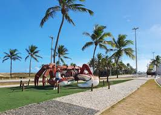

Praia de Atalaia

Na orla de Atalaia existem opções de lazer como bares e casas de dança e música, além de barracas de água de coco e quadras de basquete, futebol, tenis e uma pista de skate. Considerada uma das mais bonitas do Brasil oferece aos cidadãos e turistas o que há de melhor em lazer e entretenimento.
- Café da manhã em uma barraca da orla.
- Caminhada até os arcos da orla para fotos.
- Visita ao Oceanário de Aracaju (Projeto Tamar).
- Almoço com frutos do mar.
- Tarde livre para banhos de mar e esportes.
- Fim de tarde com água de coco observar o por do sol